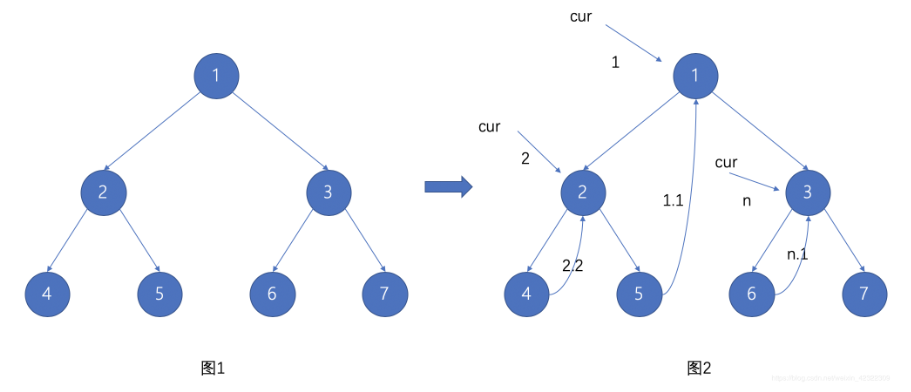

二叉树
二叉树是一种数据结构，每个节点只能有至多两个子节点，命名为左孩子、右孩子。
满二叉树：k层二叉树(1~k)，节点的总数是.
完全二叉树：满二叉树最后一层的右边部分缺失，其余与满二叉树一致。
完全二叉树有如下性质：设为叶子结点数量，为只有一个孩子节点的节点数量，为总节点数量
基本语法
遍历二叉树
- 前序遍历: 根左右
- 中序遍历: 左根右
- 后序遍历: 左右根
- 层序遍历: 逐层遍历
## 定义树节点class TreeNode: def __init__(self, val=0, left=None, right=None): self.val = val self.left = left self.right = right ## 递归：前中后序遍历都比较一致## 时间复杂度: O(n), 空间复杂度: 至多O(n)(单链表), 平均O(logn) (==O(height))def inorderTraversal(root): if not root: return [] ans = [] ans.extend(self.inorderTraversal(root.left)) ans.append(root.val) ans.extend(self.inorderTraversal(root.right)) return ans## 迭代: 需要用到栈## 时间复杂度: O(n), 空间复杂度: 至多O(n), 平均O(logn)def PreOrderTraversal(root): ## version 1：根右左 if not root: return [] ans = [] stack = deque([root]) while stack: node = stack.pop() ans.append(node.val) if node.right: stack.append(node.right) # 先放右儿子 if node.left: stack.append(node.left) # 再放左儿子 return ans ## version 2 if not root: return [] st = [] ans = [] node = root while st or node: while node: ans.append(node.val) # 先访问当前node st.append(node) # 当前node入栈 node = node.left node = st.pop().right # 最左节点的右孩子入栈 return ansdef InOrderTraversal(root): if not root: return [] ans = [] stack = deque([]) node = root while stack or node: while node: stack.append(node) node = node.left node = stack.pop() # 找到最左下的节点 ans.append(node.val) # 访问该节点 node = node.right # 准备从最左节点的右孩子开始遍历 return ansdef PostOrderTraversal(root): ## version 1 if not root: return [] ans = [] stack = deque([root]) cur = root # cur表示上一个加入ans的节点，初始化为root while stack: node = stack[-1] # 如果右孩子已经加入ans，那左孩子必然也已经加入ans，则无需继续往下遍历 if node.left and node.left != cur and node.right != cur: stack.append(node.left) elif node.right and node.right != cur: stack.append(node.right) else: ans.append(stack.pop().val) cur = node # 更新cur return ans ## version 2: 左右根 == reversed(根右左) if not root: return [] stack = deque([root]) ans = [] while stack: node = stack.pop() ans.append(node.val) if node.left: stack.append(node.left) # 先放左边 if node.right: stack.append(node.right) # 再放右边 ans.reverse() return ans## level order -> BFS -> queuedef levelOrder(root): if not root: return [] queue = deque([root]) ans = [] while queue: size = len(queue) # 记录每层的sizel level = [] for i in range(size): node = queue.popleft() level.append(node.val) if node.left: queue.append(node.left) if node.right: queue.append(node.right) ans.append(level) return ansMorris traversal:
对于每个根节点，让其左子树的最右节点指向它。

def Morris(root): if not root: return [] cur1, cur2 = root, None # preOrderAns = [] # appended when 1. one root is first connected 2. the leaf node is added. while cur1: cur2 = cur1.left if cur2: while cur2.right and cur2.right != cur1: cur2 = cur2.right if cur2.right == None: cur2.right = cur1 # preOrderAns.append(cur1.val) cur1 = cur1.left continue else: cur2.right = None # if the root is already connected, cur1 = cur1.right
通用思路
初始判断:
root==None考虑条件:
node.left == None,node.right == None
问题
一、处理二叉树
基础操作是遍历和处理，因此需要选择一种便于处理数据的遍历方式。通常来说，前序遍历（先处理数据后遍历子树，自顶向下）和后序遍历（先遍历再处理，自底向上）方法比较常用。
遍历技巧:
- 自顶向下: 需要将值作为参数向下传递
- 自底向上: 需要整合左右子树的返回值
处理技巧:
- 可以同时传递左右两个节点
- 计算高度和判断平衡可以同时进行
- 可以设置cnt，pre等全局变量记录遍历过程的信息，此变量不受递归回溯过程的影响
递归法
DFS: 每次递归处理l,r两个节点
def isSymmetric(root): if not root: return True def dfsCompare(l, r): if not l and not r: return True # when l==r==None, return True if not l or not r: return False # when one of nodes is None, return False if l.val != r.val: return False # when nodes.val are not equal, return False # compare the four children, sides with sides, centor with centor return dfsCompare(l.left, r.right) and dfsCompare(l.right, r.left) return dfsCompare(root.left, root.right)BFS: 每次迭代pop和处理两个节点
def isSymmetric(root): if not root: return True q = deque([root.left, root.right]) while q: l, r = q.popleft(), q.popleft() if not l and not r: continue if not l or not r: return False if l.val != r.val: return False ## push in the queue in the corresponding manner. q.append(l.left) q.append(r.right) q.append(l.right) q.append(r.left) return True平衡二叉树需要满足：
- 左右子树都是平衡二叉树
- 左右子树高度差<=1
自底向上的方法。
树形前缀和
自顶向下，和560题一样记录前缀和，不同的是在计算前缀和的时候，只能累计一条树枝，当遍历到右子树的时候，需要从mp中减去左子树的前缀和。
树形最大子数组和，dp
- dp[i]代表以i节点为根，向下的
单条分支的最大和；包含节点i的路径由左边的分支和右边的分支加起来得到 ans=node.val + max(0,dp[node.left]) + max(0,dp[node.right])，dp值即为dfs的返回值
需要遍历整棵树。
- DFS：先遍历右子树，再左子树。对
每个深度，第一个进入该深度节点就是答案。 - BFS：每一层的最后一个节点就是答案。

LCA的性质:
如果当前root是p,q节点的LCA，它必定是下面两种情况之一：
- root是LCA，且p,q分别在左右子树 —— p,q在两条路径中
- root是LCA，且root是p或者q，另一个节点在其中一个子树中 —— p,q在一条路径中
解法：
- 自底向上遍历二叉树，当遇到p或者q直接返回。如果某个root的左右子树分别返回了p,q，表示当前root就是LCA；如果一直到根节点仍有一个子树返回None，代表另一个子树返回的p就是LCA。
迭代法
解法1：自顶向下
- 对于每个节点，把其
右子树作为左子树最右下节点的右孩子；再将左子树移到右边，左子树置空。迭代法。
解法2：自底向上
- 要求以
根左右的顺序展开为链表，那可以以右左根的顺序从链表尾部开始构建。 - 找规律可以发现，遍历到当前节点时，把
遍历的上一个节点(pre)插入到自己右孩子处，并把左孩子置空即可满足要求（此时当前节点的左孩子已经是单链表了，右孩子已经无用）。 - 用全局pre记录遍历的上一个节点。
二、构造二叉树
给定中序和前/后序遍历，我们可以还原出二叉树。根据中序的所提供的节点的位置关系信息，从前/后序中按顺序拿到节点值来构建。
根据中序list创建字典将index和下标关联起来
dic = {val:i for i,val in enumerate(inorder)}从前/后序遍历中
按顺序弹出节点找到节点的index，划分index左右两边作为左右子树
从
前序构造的时候，先构造左子树；从后序构造的时候，先构造右子树判断空节点：l>r —— l,r的作用就是填入未写在顺序中的空节点
Construct a binary tree according to the maximum number. Find the maxnum in the left part and right part -> Monotonic stack(descending order).
三、特殊的树
3.1 二叉搜索树(Binary Search Tree, BST)
根节点的值大于所有左子树节点的值，小于所有右子树节点的值，且所有子树也都是二叉搜索树。
- 插入/删除/查询时间复杂度：，寻找位置的时候只需要遍历一半的子树
- BST的中序遍历是严格递增的序列
98. 验证二叉搜索树 **
- 解法1，自顶向下：dfs的时候传递l，r作为参数，验证所有的元素是否在[l:r]中。当向下传递，[l:r]收缩。
- 解法2，中序遍历: 保证中序遍历的序列是升序的. -> 在dfs之外记录前一个节点的值pre。
二叉搜索树中序遍历 == 严格升序序列，因此直接cnt记录中序遍历时的顺序，到k的时候直接打断。
- 注意dfs时，cnt需要是全局变量
- For root.val < low: the root and root.left need to be trimmed.
- For root.val > high: the root and root.right need to be trimmed.
96. 不同的二叉搜索树 * 给定数值1~n，找出不同的BST数目
解法1：DFS
- 考虑1-n中
每个数字作为根节点numn可能构造的BST数量，numn=numl*numr。因此答案是num1+num2+...+numn.
解法2：DP
根据DFS的思路可以知道，numn可以拆解为子问题numl的积。如下图，n=3的时候，当以1和3为根节点，剩余的2个节点组成的BST数量就是n=2时候的BST数量。
dp[i]: 1-i的数字能组成的BST的数量
dp[0]=1,dp[1]=1
for i in range(2,n+1):for j in range(i):dp[i] += dp[j]*dp[i-j-1]
3.2 满/完全二叉树
Properties of complete tree:
For a root node, the height of left and right sub-trees are
landr:- if
l == r: left tree must be a full tree - if
l > r: right tree must be a full tree
- if
For problem 222, just recursively find the full sub-trees. If left is subtree, the number of left-tree nodes are . Then just need to count the number of nodes of the right sub-tree.